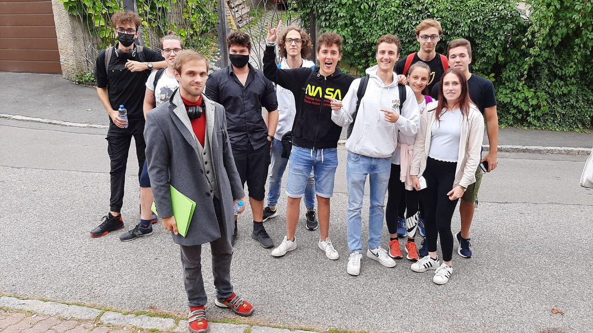

Hi, I'm Luca Sartore!
I am a Computer Engineering student at the university of Trento (IT). I have a background in electronics and automation from high school. I like programming, especially low level stuff like Rust and c++, I enjoy robotics, and the creative process that takes place when you try to write algorithms that interact with real world objects. I also enjoy movies and videogames.
My experience during the RoboCup:
In High school I participated in the robocup junior competition.
Me and my team only had a small fraction of the knowledge that was needed to develop the project.
But we didn’t surrender… we put hundreds of hours into the project… I learned Python,
3D modeling and 3D printing from scratch, and our team finally succeeded and won first place in the World Championship!
In this experience I learned how to understand a big problem,
split it into smaller pieces, and came up with a solution… the basic steps of Engineering.
My experience in Erasmus:
In High school I participated in the Erasmus+ program. I and some other students went to Prague during the summer, and worked there for a while. I really enjoyed the experience as it gave me the opportunity to experience what is like living and working in a foreign country.
My experiences at University:
I am enjoying my years at university, and I had the opportunity to do some really cool stuff…
For an exam, I ended up as the Leader/Project Manager of a group made up of 70+ people.
The most important things that I learned in this field are how to manage a tram properly,
and how to deal with conflicts inside the team.
I’ve been “hired” by the university as a tutor for the Advanced Programming course.
I enjoyed this experience, as it gave me the opportunity to enhance my communication skills.